02
사업장클리닝/정기청소
정해진 날, 같은 품질로
사업장을 관리합니다
사무실과 관공서, 학교, 화장실 정기청소부터 바닥왁스와 카페트, 골프장카트 청소까지 맡습니다.
카페트청소바닥왁스청소골프장카트청소사무실정기청소관공서정기청소학교정기청소화장실정기청소인력파견근무계단청소분리수거
자세히 보기

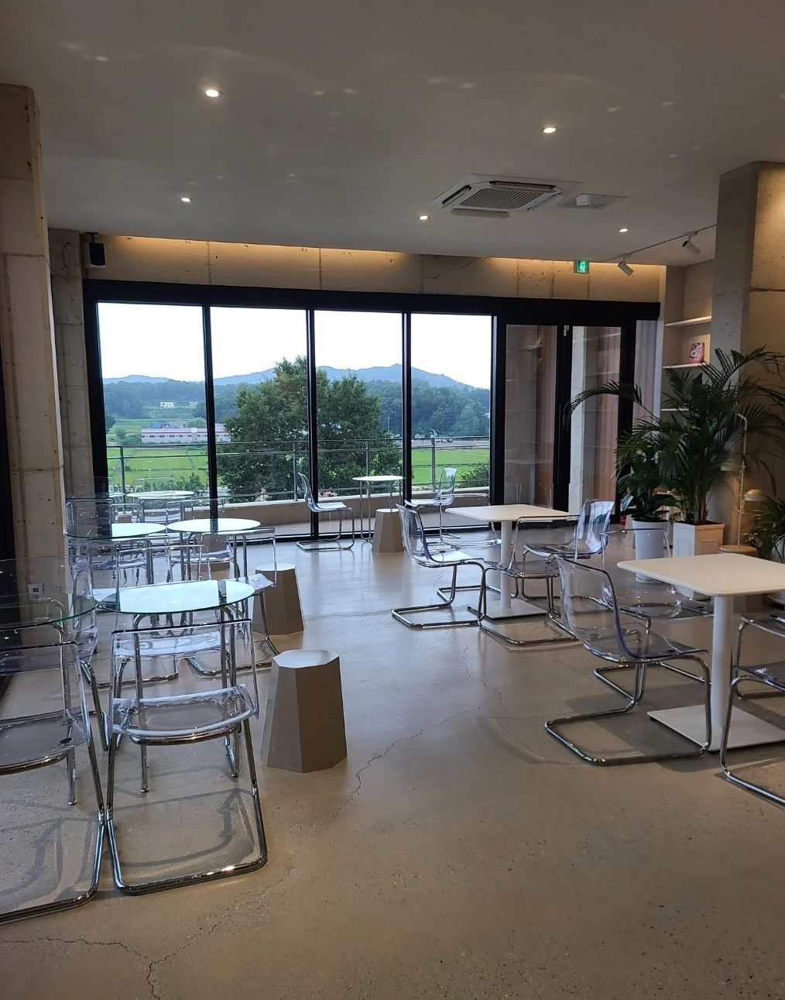
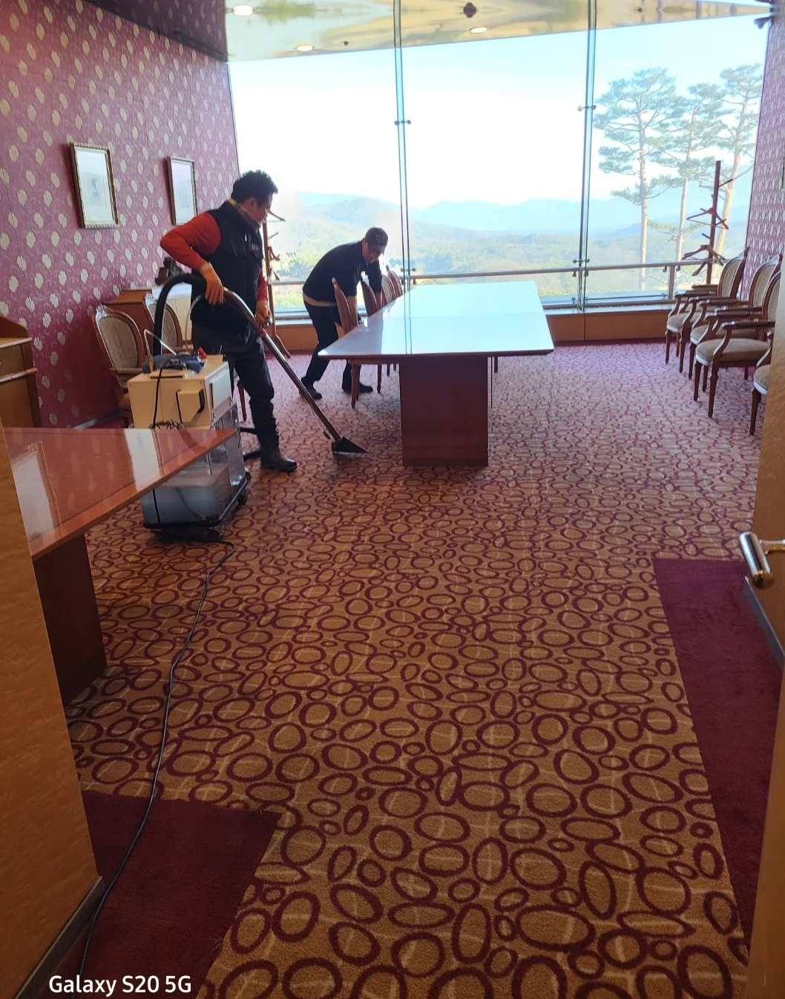


2015년부터 맡은 공간을 직접 닦아 온 이푸른티에스입니다.
지나가는 사진은 모두 실제 작업 현장입니다.유리, 외벽, 공장, 조형물, 에어컨까지 이푸른티에스가 다녀온 곳입니다.
정성은 결과로 나타납니다
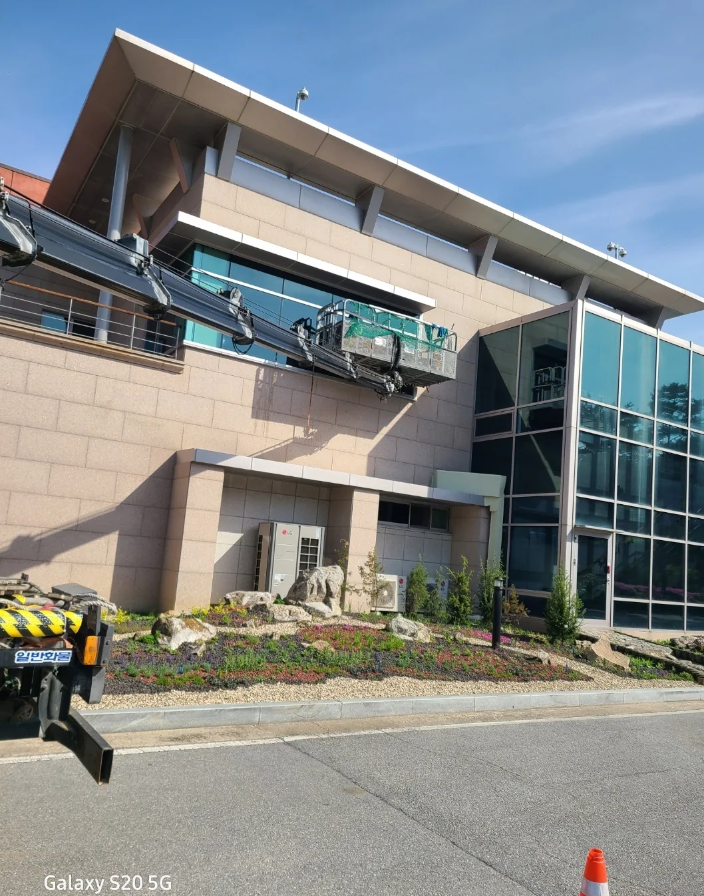
정성은 결과로 나타납니다

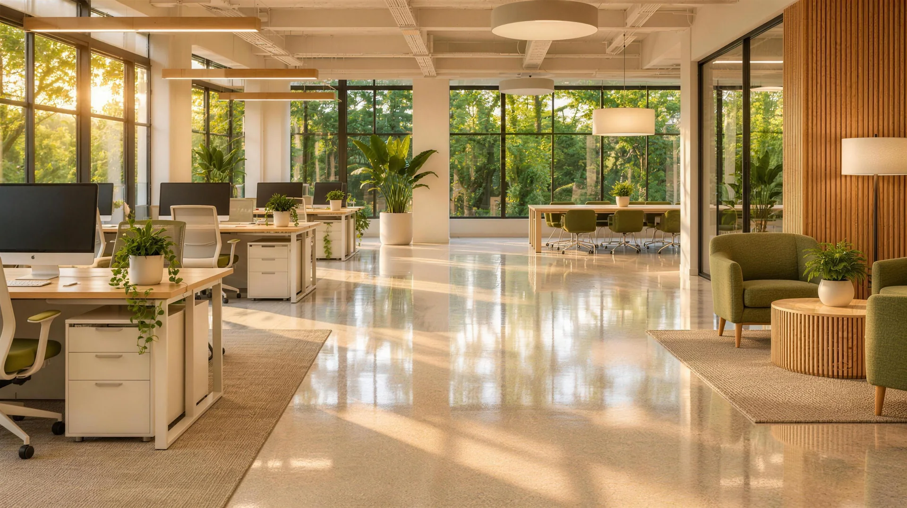
청소는 또 다른 인테리어입니다

그 결과를 만드는 업체,
이푸른티에스
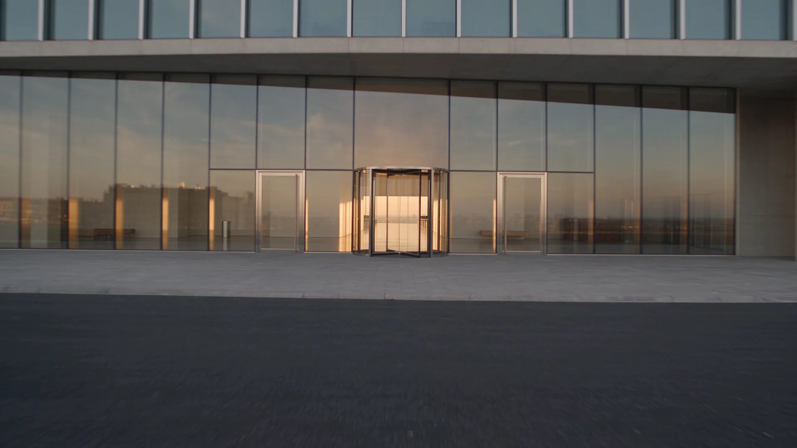
사무실용과 화장실용 걸레를 구분하여 위생적으로 사용합니다.
월 4주를 기준으로 주차별 청소 방식을 달리하여 체계적으로 관리합니다.
체계화된 청소 매뉴얼을 바탕으로 일관되고 균일한 청소 품질을 제공합니다.
할 수 있는 일을
할 수 있다고 말합니다
이푸른티에스는 맡은 현장에 직접 나가 청소합니다. 할 수 있는 일만 약속하고, 약속한 일은 끝까지 마칩니다. 크게 꾸며 말하기보다 깨끗해진 결과로 보여 드리겠습니다.
회사소개 보기02
정해진 날, 같은 품질로
사업장을 관리합니다
사무실과 관공서, 학교, 화장실 정기청소부터 바닥왁스와 카페트, 골프장카트 청소까지 맡습니다.


03
손이 많이 가는 현장일수록
차근차근 합니다
쓰레기집, 공장과 물류창고, 준공청소, 대형 조형물까지 현장을 먼저 보고 작업 방법을 정합니다.


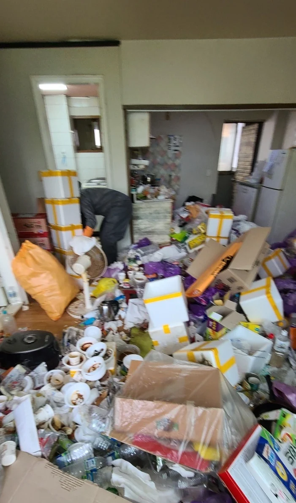

04
보이지 않는 안쪽까지
분해해서 닦습니다
가정용부터 기업, 학교와 관공서 에어컨까지. 필터와 실외기 청소, 냉매가스 점검과 충전도 합니다.

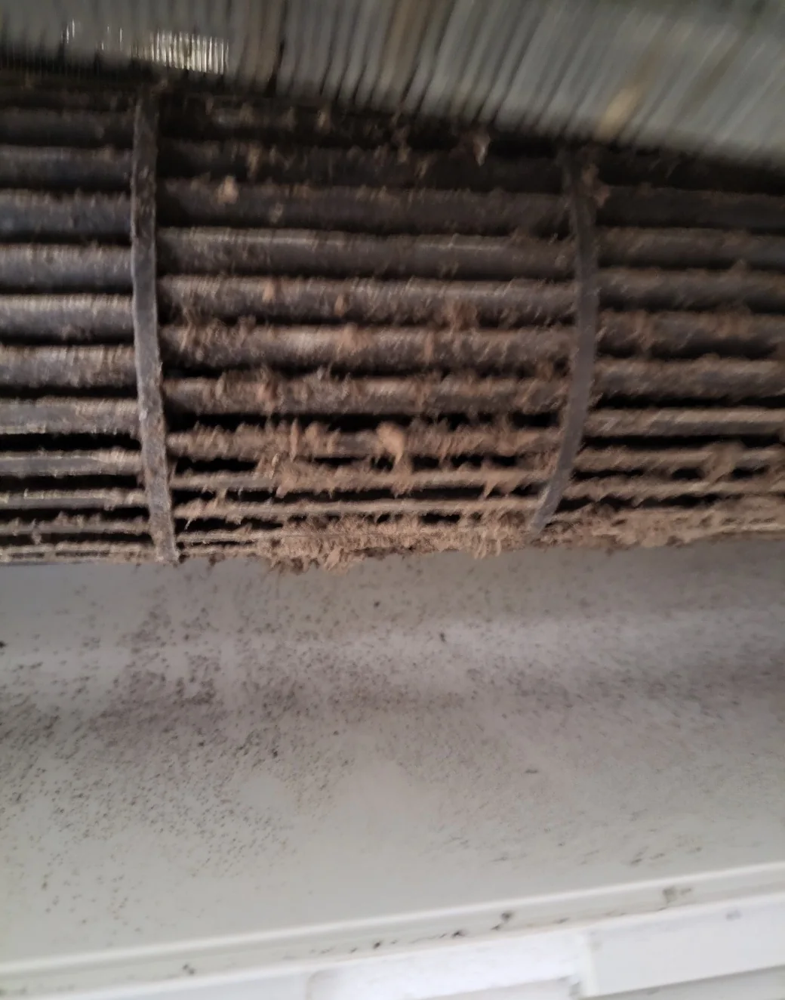
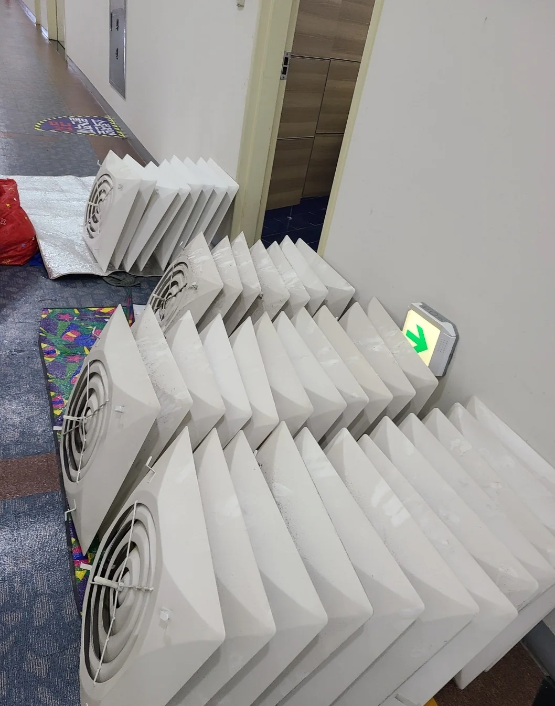


05
건물의 바깥도
관리가 필요합니다
외벽 청소와 보수, 방수, 고소유리청소, 실리콘과 시트지 제거, 배수로청소와 낙엽망 설치까지 합니다.
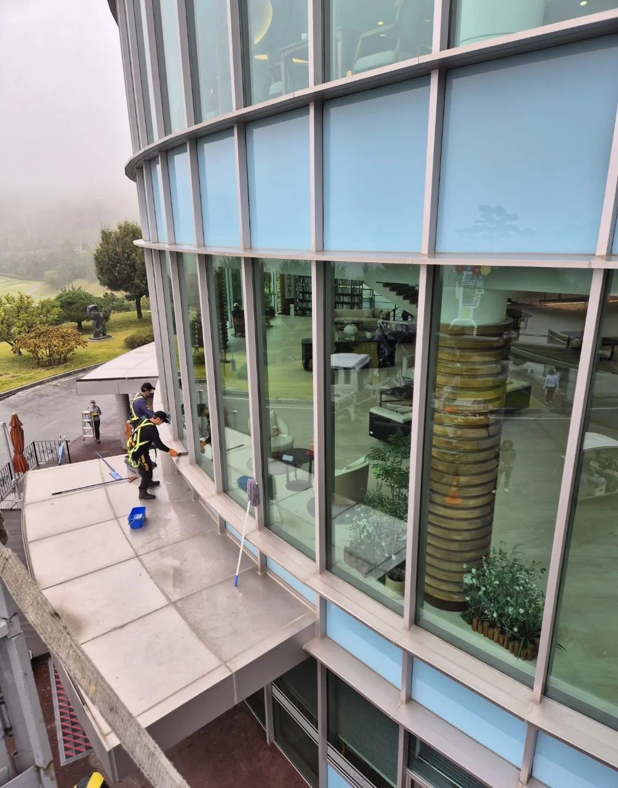
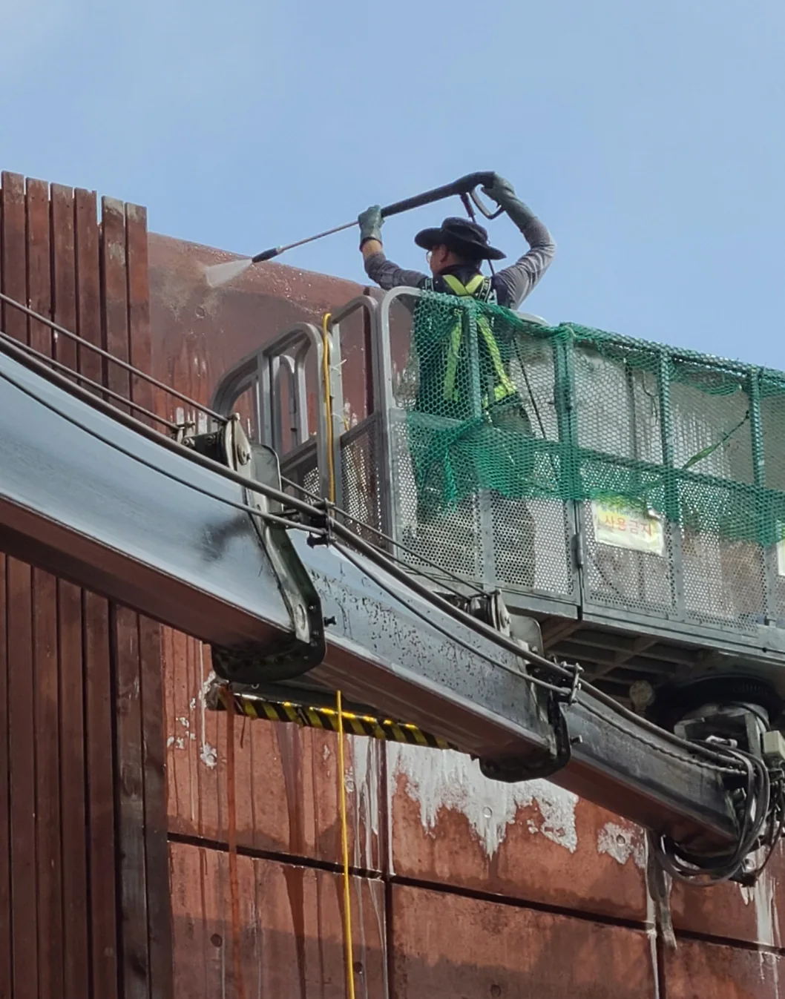
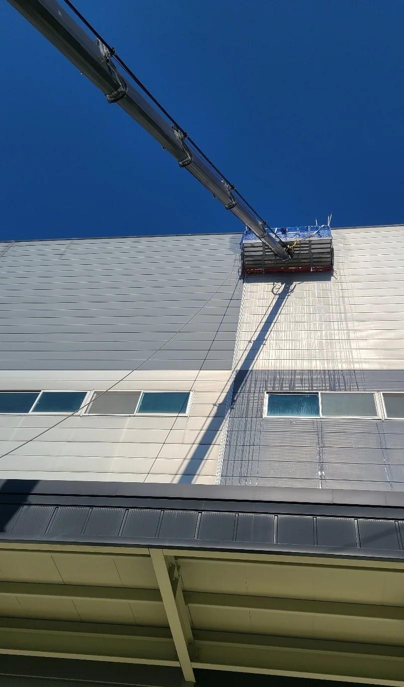

06
정기소독으로
위생을 지킵니다
학교와 사무실, 공장, 빌딩, 식당 정기소독과 실내소독, 해충방제와 모기퇴치를 하고 소독필증을 발급합니다.

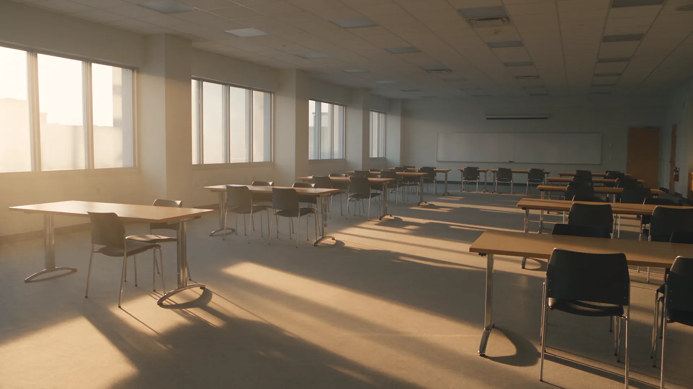
07
필요한 위생 소모품도
함께 챙깁니다
롤화장지와 핸드타올, 물비누처럼 사업장에서 매일 쓰는 소모품을 납품합니다.
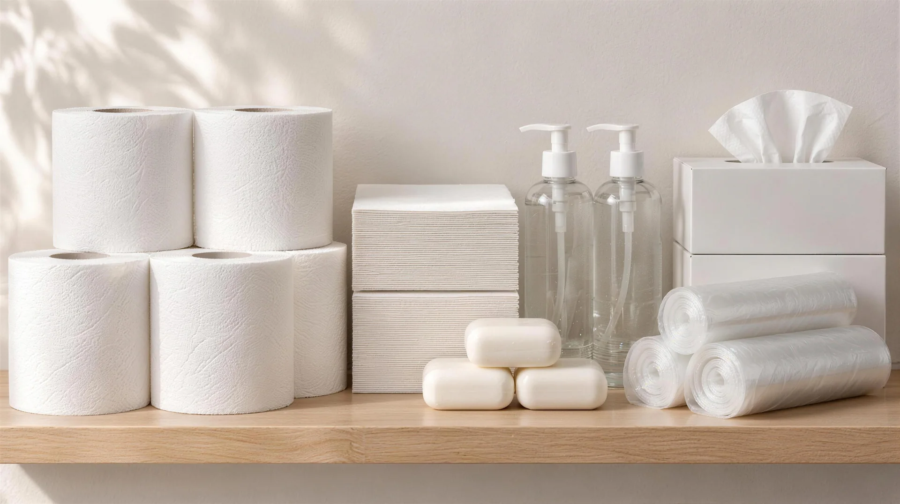
청소가 필요한 공간을 말씀해 주세요.
전화로 상담해 드립니다.